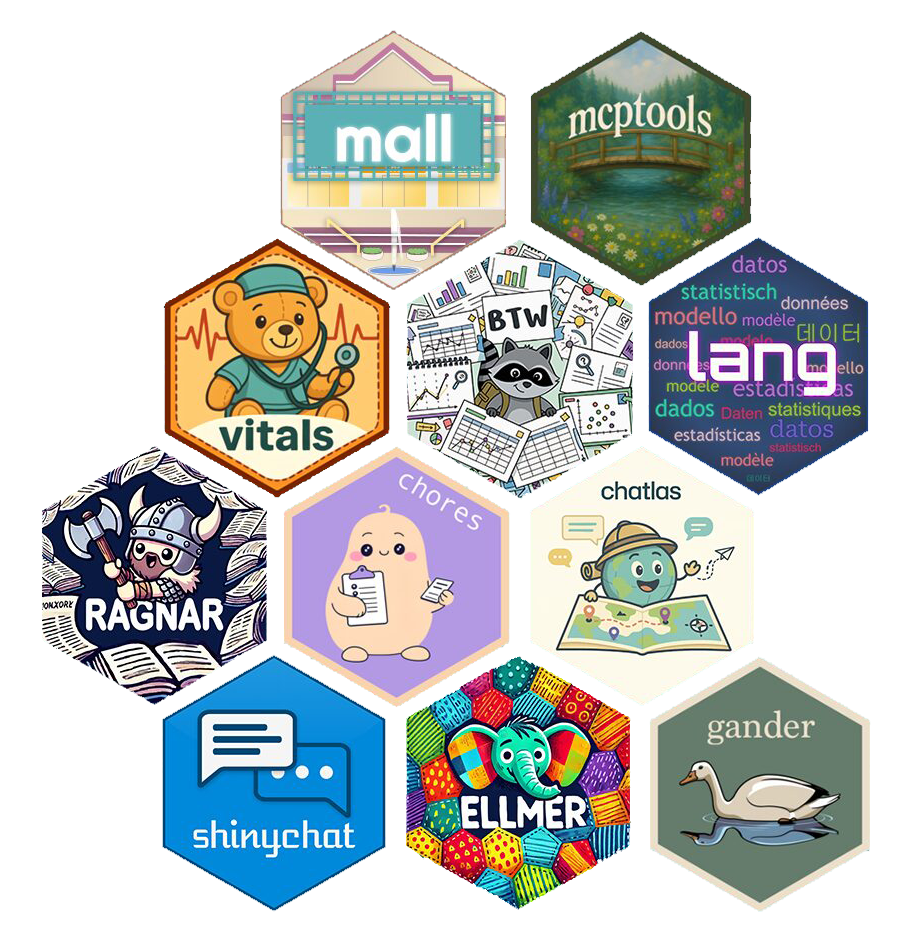
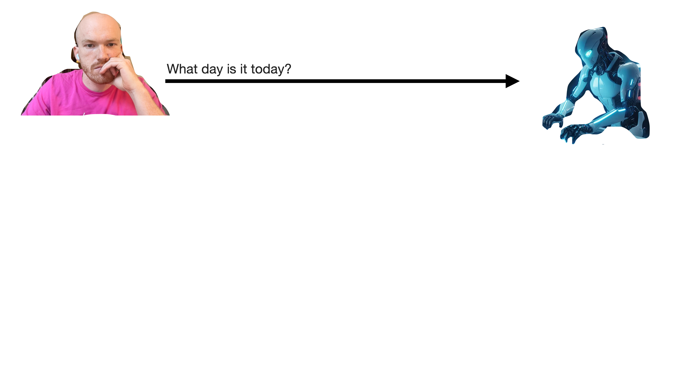
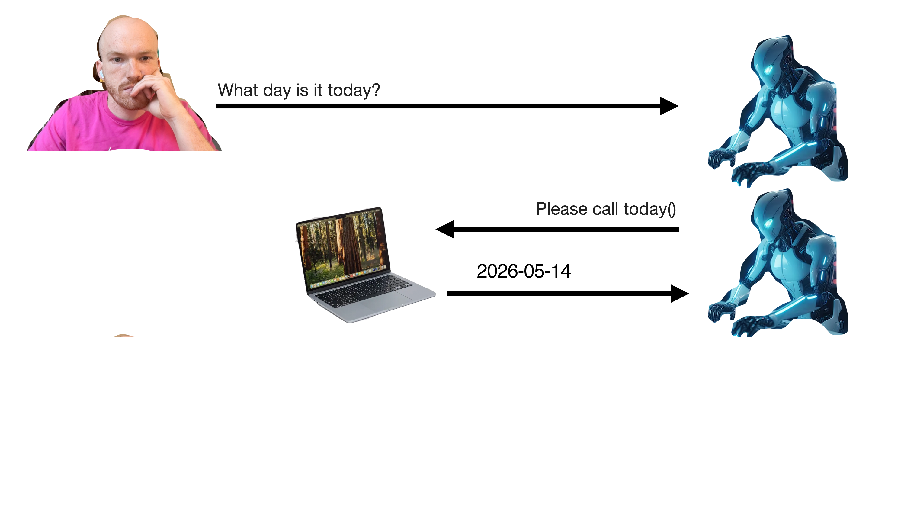
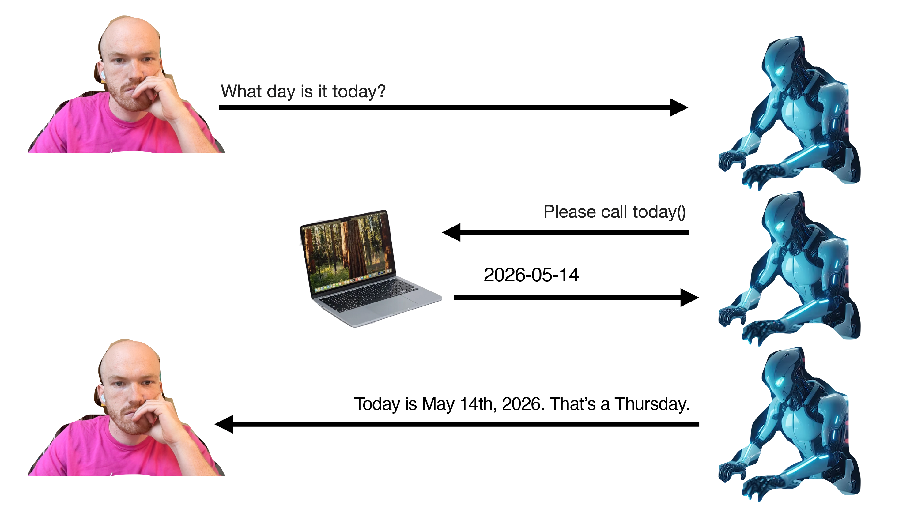
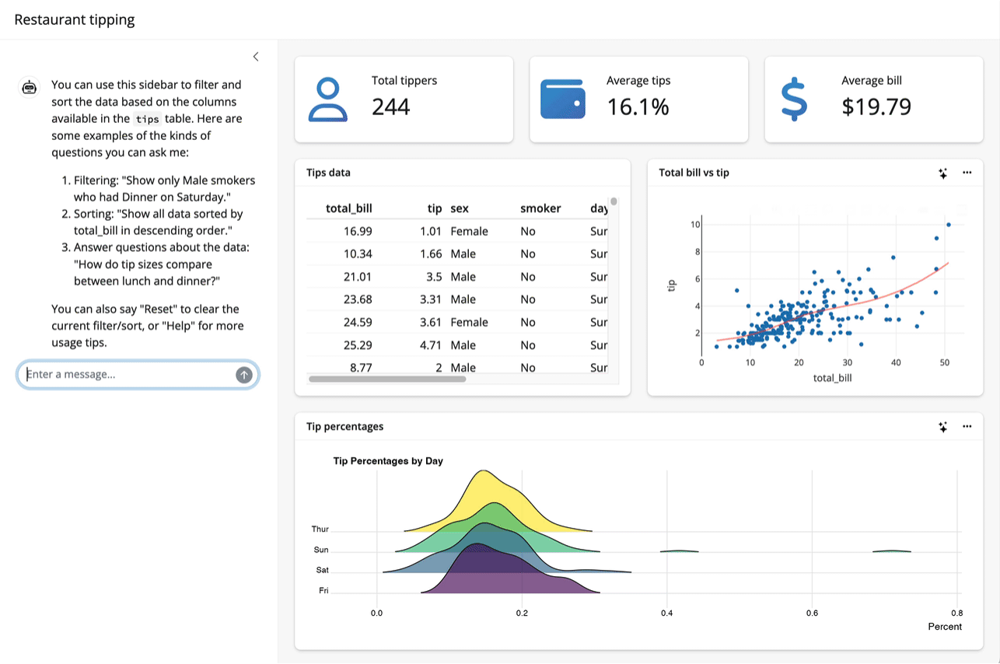
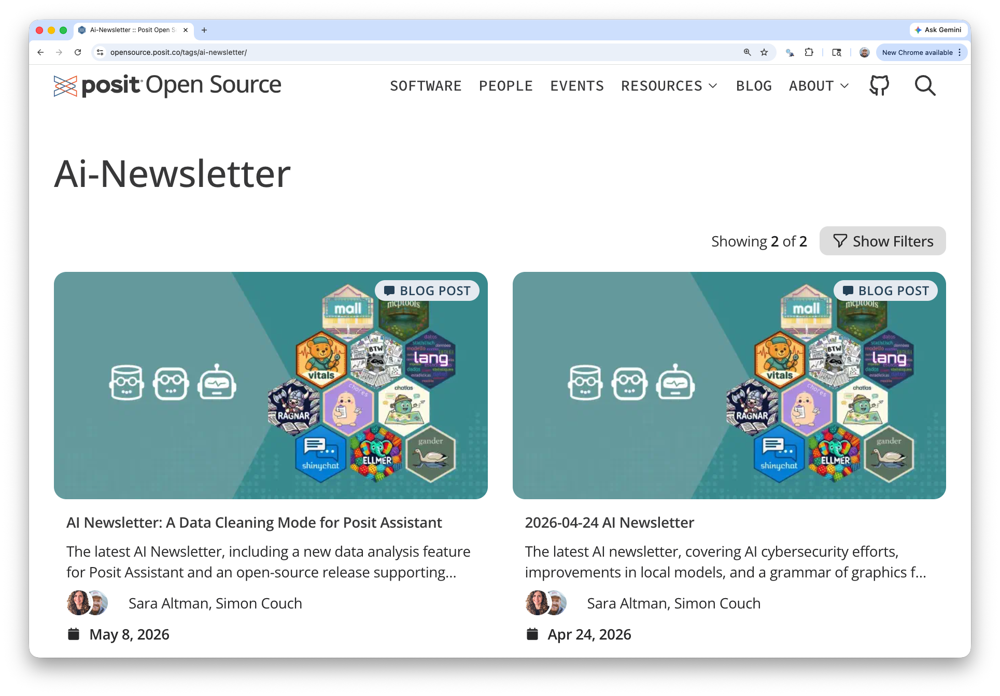
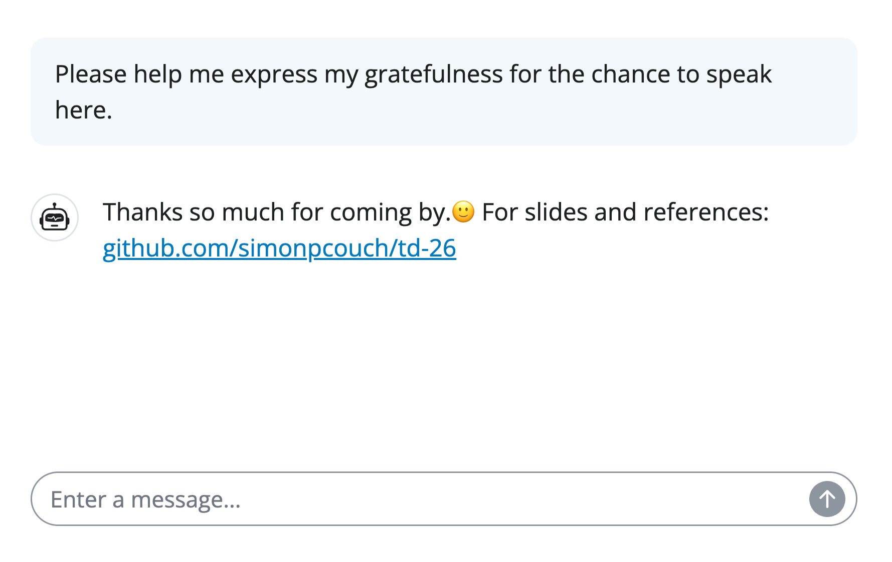

library(ellmer)
chat <- chat_anthropic()
chat$chat("Who are you?")
#> Using model = "claude-sonnet-4-6".
#>
#> I'm Claude, an AI assistant created by Anthropic. I'm here to help
#> with a wide variety of tasks like answering questions, helping with
#> analysis and research, creative writing, math and coding problems,
#> and having conversations. Is there something specific I can help
#> you with today?Practical AI for Data Science 
Simon Couch - @simonpcouch
AI Core Team @ Posit
Median LinkedIn post (2026)
AI will change EVERYTHING about data science. Hear me out…👇
Click to expand
Median LinkedIn post (2026)
In AI discourse:
- The Data being Scienced can happily be sent straight to OpenAI’s servers
- Data science can be “one-shotted”
- “Close enough” is fine
- Tokens are cheap
AI will change EVERYTHING about data science. Hear me out…👇
Click to expand
LinkedIn vs. reality
In AI discourse:
- The Data being Scienced can happily be sent straight to OpenAI’s servers
- Data science can be “one-shotted”
- “Close enough” is fine
- Tokens are cheap
In reality:
- Data science happens on mostly sensitive / confidential data
- Data science is messy, subtle, and context-rich
- It’s (still) bad to be wrong
- Agents require infrastructure
I want to:
- Show you what’s possible via LLM APIs
- Help you imagine making it work in practice
What’s possible via APIs
Talk to LLMs via APIs
Web vs. API:
- Web: chatgpt.com, claude.ai, other “chat interfaces”
- API: Using Python, R, etc. with an API key
Talk to LLMs via APIs

1. Structured data
2. Tool calling
3. Coding agents
Talk to LLMs via APIs
Structured data
github.com/simonpcouch/td-26
Structured data
# How would you extract name and age from this data?
prompts <- list(
"I go by Alex. 42 years on this planet and counting.",
"Pleased to meet you! I'm Jamal, age 27.",
"They call me Li Wei. Nineteen years young.",
"Fatima here. Just celebrated my 35th birthday last week.",
"The name's Robert - 51 years old and proud of it.",
"Kwame here - just hit the big 5-0 this year."
)Structured data
Structured data
Structured data
Structured data
github.com/simonpcouch/td-26
Tool calling
Tool calling
Tool calling
Tool calling
Tool calling

Tool calling

Tool calling

Tool calling
Coding (agents)
Agent = LLM calling tools in a loop
Coding agents: querychat
Tool: write_sql_query

https://posit-dev.github.io/querychat/
Coding agents: side::kick()
Tools: bash(), console() (like Copilot or Claude Code)
github.com/simonpcouch/side
What’s possible via APIs
Making it work in practice
Raise your hand if…
- Your workplace has some approved, secure deployment of an LLM
- That LLM is frontier(ish): Claude Sonnet 4.5, GPT 5.2
- You’re able to access that deployment via a chatbot
- Someone on your team may have figured out how to connect to it via an API
OpenAI API compatible endpoints
Practical AI for data science

https://opensource.posit.co/tags/ai-newsletter/

github.com/simonpcouch/td-26